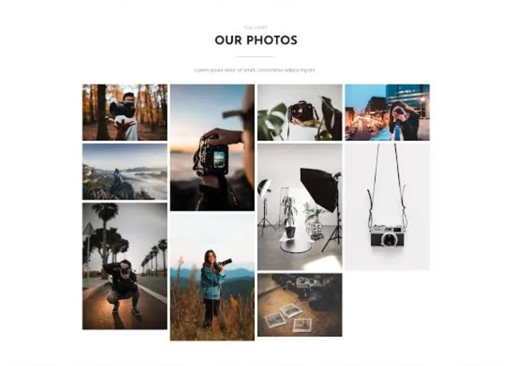

Full stack / Shared memories
Group Board
A shared photo-board project for friends and family to upload, store, and browse their memories.

The idea
Shared moments can become scattered across conversations and devices. Group Board brings uploaded photos together in a browsable space for friends and family.
The experience
The project centres on adding photos and returning to browse previously uploaded memories. The supplied gallery image above is an illustrative preview.
Availability
Group Board is not currently hosted. The repository is available to explore the source. There is no live-demo link for this project.